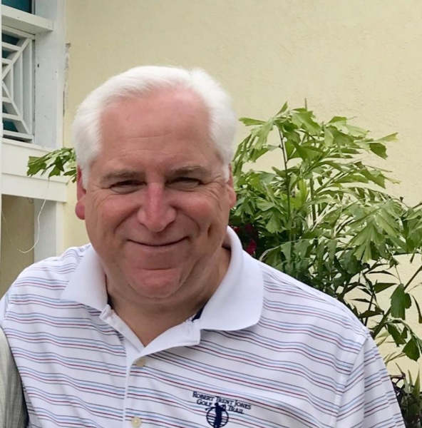
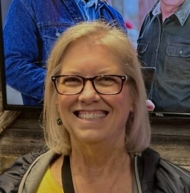
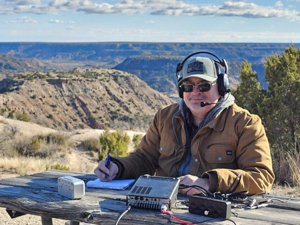

The Nominating Committee asked each candidate to introduce themselves to the membership. The responses received are below, grouped by position.
For President: Dick Price, N5RKP

Mary and I have been married for 39 years, and we have a daughter and four grandchildren. I received my Bachelor of Science degree from Purdue University in Electrical Engineering Technology. I spent 38 years at MCI/Verizon, starting as a communications technician and advancing to regional vice president for national and international operations. In retirement I consulted for seven years as the lead in hurricane recovery communications and led federal grant management for statewide broadband expansions. As a volunteer in fire/EMS/hazmat for over 34 years, I completed my service as Fairview Fire Chief. I hold the rank of Eagle Scout. Currently, I volunteer on three advisory boards: Purdue Polytechnic School, Collin College Fire Science, and Collin College Law Enforcement.
My father was a Navy radioman in World War II, which sparked my interest in radios. At age 13, I got my first CB handheld, a shortwave receiver, and a mobile. I received my Technician and General licenses in 2016, and Extra in September 2025.
As a MARC member for 10 years, I have judged the science fair, co-taught the radio merit badge, restarted the Heard Museum relationship, and participated in Elves on the Air, Oktoberfest, several Field Days, Play/Learn sessions, and IHOP breakfasts, and attended numerous MARC board meetings for more than five years. I lead the Fairview repeater project and revived MARC's engagement with the McKinney Emergency Operations Center.
If elected, I will continue to grow and develop our club using our momentum in all areas, thanks to previous boards and members. We need to rejuvenate contact with our "seasoned" members who, as Elmers, have a wealth of knowledge to share with us all. I will work to encourage family members and youth to get involved in our hobby using MARC's relationship with the Heard. I will be accessible to our members and seek input on ways to improve our club.
For Vice President: Geri Sudman, KI5OEX

- 1977: Novice, KA8BEU (expired)
- February 2021: Technician; March 2021: General
- March 2021: Joined MARC
- January 2025 to present: MARC Treasurer
I have served as the 2025-2026 McKinney Amateur Radio Club Treasurer. During my tenure I modified our spreadsheet for improved project tracking and reporting capabilities, enrolled MARC in the Kroger and Walmart reward programs, and partnered with local restaurants for fundraisers. This has resulted in over $850 added to the treasury to date.
I assisted in efforts to secure funds for our many projects and activities. I successfully solicited donations, both in-kind and financial, resulting in substantial contributions from Aven Tools, Encore Wire, and hard hats from Northern Tool, plus gift card rewards from local businesses that are distributed to club members who complete a fox hunt or provide special service to the club.
Serving as the interim Events Coordinator, I focused on classroom sessions to provide content identified by club members at our spring meeting. My participation in this area prepares me to be your Vice President, which has the delegated duty of scheduling presenters for our club meetings.
Should I become your Vice President, I'll follow in my predecessors' footsteps and find interesting content presenters for our club meetings. I'll create and maintain a contact record in our cloud storage. Scheduled presentations will be added to our Discord event calendar and HamClubOnline, which updates our website calendar, and also to our Facebook page for more visibility.
If it becomes necessary to preside over a meeting and set the agenda, should our President need coverage, I am confident I can fill that role.
I'll also solicit assistance with event coordination and other areas to encourage more members to participate in the club's many supporting roles.
For President and Vice President: Lance Chapman, KM6LMP
Background: I started on the radio from a friend that texted me on a Tuesday and said "Hey, we should get ham radio licenses." The following Saturday, I passed my Tech test and the hobby started. My time in California learning radio was a bit slow; I didn't really have an Elmer to help. I have been a MARC member for a little over five years. In that time my knowledge and love for the hobby has grown greatly. I'm currently the club Secretary, AV Team Lead and resource, YouTube admin, and assist on club projects and repeater sites.
Within the first couple of months of becoming a club member, I was listening to the Sunday night net. It happened to be an SK net, and I listened to all the stories about the SK. I started getting a bit emotional and said to myself, "This is a great place, I want to die here." I feel that I belong here, and I don't want to go anywhere else. I love the club and the community.
Qualifications: My background as a 35-year retired electrician enables me to handle complex problem-solving and troubleshooting. In my line of work, I was often challenged with "just get it done." I do my best to have a can-do positive attitude and am driven by an inherent desire to help others. Above all, my love of the hobby is my deepest qualification. I like to engage hands-on in club activities and projects such as our box builds, repeater sites, and community engagements.
Vision for the club:
- Utilize our Elmers and foster new ones.
- Further expand teaching and knowledge sharing.
- Continue the positive attitude of learning from others as well as teaching what we can.
- Continue encouraging involvement in club activities.
- Seek opportunities to connect with the public at large.
- Keep the club's momentum in the contact sport.
For Treasurer: Robert Keister, WZ5V

Hello fellow members! My name is Robert Keister, WZ5V, and I appreciate the opportunity to once again run for MARC Treasurer. Having previously served as Treasurer before my two years as MARC President, I understand the club's operations, finances, and goals. As a CPA, I also bring the professional experience necessary for this position.
However, my primary reason for running goes beyond managing finances. It's about helping MARC continue the incredible growth and positive direction we've experienced over the past few years.
We've seen tremendous growth in membership, activities, community involvement, and, most importantly, the friendships and fellowship that make MARC such a great organization.
During my time on the Board, we've introduced several initiatives, including our Potluck POTA BBQ gatherings, the MARC Membership QRZ Program, renewed youth involvement, club auctions, and a reorganized simplex net. We're also nearing completion of the long-awaited Fairview repeater project.
Looking ahead, I want MARC to continue building on this momentum through expanded activities, greater member participation, youth development, and opportunities for members to learn, share knowledge, and enjoy amateur radio together.
As Treasurer, my commitment is to responsible financial stewardship, transparency, and sound financial planning. I believe our club's resources should be managed carefully while supporting worthwhile projects, new opportunities, and long-term financial stability.
None of our accomplishments would have been possible without the dedication and generosity of our fellow Board members and volunteers who contribute their time, finances, and talents. MARC's success has truly been a team effort.
I'm proud of what we've accomplished together and excited about our future. My goal is simple: to keep MARC growing while preserving the welcoming atmosphere and fellowship that make our club special.
Thank you for your consideration and continued support!
For Secretary: Chad Knowles, KJ5LVY
My name is Chad Knowles, and I am an Amateur Extra class operator with the call sign KJ5LVY. Since joining the McKinney Amateur Radio Club (MARC) in June 2025, I have thoroughly enjoyed immersing myself in our active community. I am currently a Monday night net operator, and I actively participated in our Summer Field Day for 2026. From participating in POTA BBQs to volunteering for Elves on the Air and Oktoberfest, I've found great fulfillment in supporting our club, and I look forward to stepping into the Sunday night net control rotation for the upcoming year.
My background blends a strong technical drive with extensive professional experience as a supervisor. In my leadership roles, I have managed teams while prioritizing accurate record-keeping, precise data tracking, and clear documentation. These supervisory skills, combined with my cleared volunteer status with the City of McKinney and Gold-level National Career Readiness Certificate, prepare me well to manage club correspondence efficiently and keep our collective archives highly organized.
My primary focus as Secretary is to streamline our administrative workflow and improve internal communications. I aim to keep our meeting minutes accurate, comprehensive, and readily accessible so all members stay fully informed on club business. Additionally, I want to champion initiatives that bridge our administrative tasks with our technical passions, whether that means preserving clean logs of club assets or ensuring our digital platforms seamlessly support member coordination. I look forward to contributing my organizational and leadership skills to support MARC's ongoing growth and success.
For Secretary: Daniel Elliott, KJ5KNY
My name is Daniel Elliott, KJ5KNY. I joined MARC approximately two years ago and have regularly participated in the Monday night simplex net. This year, I volunteered to serve as NCO. I have enjoyed attending club meetings at Spring Creek. Since joining the club, I have worked the overnight shift during Field Day and participated in teardown.
My years of experience as a two-way radio technician have prepared me to serve as Secretary for our nonprofit. Throughout my career, I have taken on work that demands technical knowledge, careful planning, and dependable follow-through. I have climbed towers to install microwave radios, designed 911 dispatch radio consoles, and connected radios to those consoles. I have also installed and maintained multimillion-dollar communications infrastructure, where accuracy and reliability are essential.
That experience has taught me to pay close attention to detail, document work clearly, and communicate effectively with people in different roles. These skills will help me keep accurate meeting records and support the officers as they carry out the organization's work. A secretary's role is not only to record decisions, but also to help ensure information is organized, accessible, and useful to the team.
If elected, I intend to work closely with the new leadership to support a smooth transition. The club is already well positioned for success, thanks to the excellent foundation that has been established. I want to build on that foundation by providing consistent, dependable support and helping the leadership stay informed and organized.
I would bring a practical, service-minded approach to the position. I would be honored to serve as Secretary and contribute to the continued strength and success of MARC.